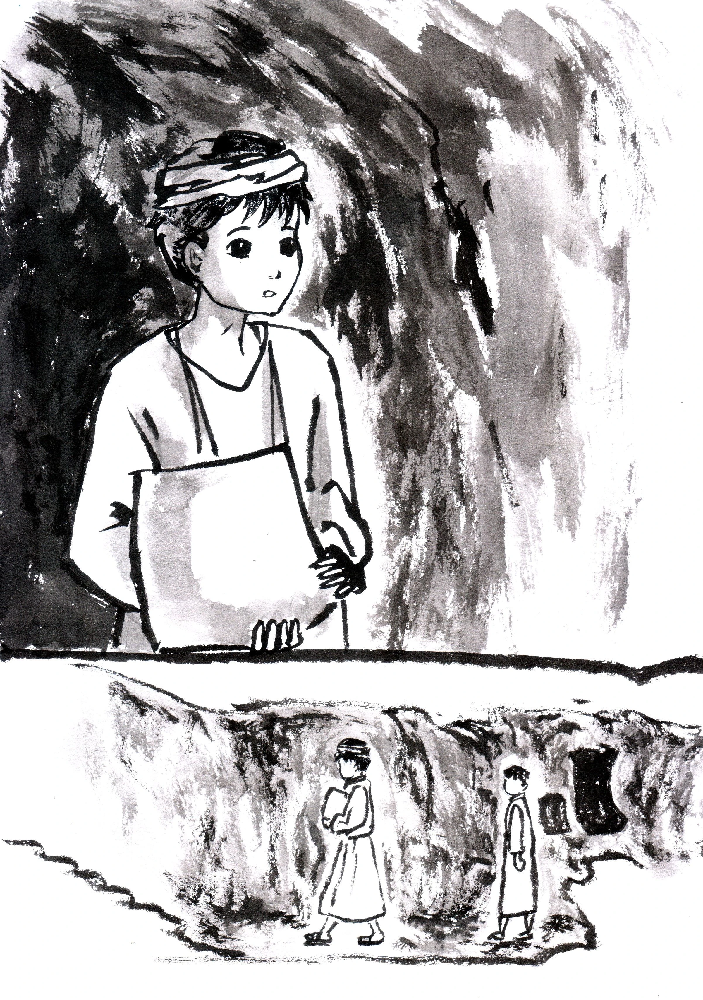

第2章

這時，一陣冷風使徐心昀從胡思亂想中回到現實，她這才注意到周遭環境已不再是剛才的地下儲藏室，反而是一條逐漸狹窄的走道，水泥牆不知從何開始轉為鬆軟土質牆壁，走道頂端距離徐心昀的頭只剩十公分之差。
狹小的通道形成一股無形的壓迫感，但流通的空氣與冷意降低了徐心昀的防備。出於好奇，她繼續向前，儘管這時通道已狹窄至必須蹲低才能前進的程度。又持續前進一段時間後，通道才由狹小轉為開闊。
來到通道的盡頭，徐心昀不得不停下腳步──原來呈現在她眼前的是一個三岔路口。
徐心昀驚覺，這裡不是普通的天然洞穴，極有可能是人造的。
「這究竟是什麼地方？這個地下洞穴有多大？我會不會被困在這？」想到這裡，對於未知的恐懼席捲而來。她想趕快往回走，回到家裡的儲藏室，卻有個聲音阻止了她。
「伯里克利？」一個身穿粗布服飾的少年從最左邊的岔路口走出來。徐心昀愣在原地，故作鎮靜的同時，大腦如旋風運轉著，亟欲辨明眼前來者是好是壞。
「你怎麼在這裡？迷路了嗎？大家都在忙著把小麥搬回倉庫。」
徐心昀真希望陌生人不是在跟她說話，她已經快承受不了這莫名奇妙的情況了！但這裡除了陌生人與她，再也沒有別的人了。
左顧右盼的同時，徐心昀恍然發現自已身上竟然穿著跟陌生人相同的服裝。
「難道眼前這個人是在跟我說話？」徐心昀內心推論著：「他大概是把我認成一個叫做『伯里克利』的人了。」
保險起見，徐心昀決定先應付眼前的難關：「呃，對，我正在找回去的路。」
「那你跟著我走吧，我可以順便帶你認識這裡的環境。」陌生人口氣和緩，似乎沒有惡意，這讓徐心昀稍微放心一些，便跟著這位陌生男子，走進洞穴更深處。
「不過，」徐心昀，或者該說是伯里克利，低頭盯著自己的身子，腹誹不已：「伯里克利是個男生吧？怎麼會讓我一個女生進入到不同性別的身體裡面啦！」想到這裡，伯里克利不禁扭動著身子，感覺全身上下哪裡都不對勁。
「剛來到地下，想必還不太習慣吧？這裡確實和地上的資源沒得比，但你放心，基礎設施該有的這裡都有。」走在伯里克利前方約三步的距離，陌生人領著他前進。
雖然兩人速度並不快，但伯里克利卻必須發揮全身肢體的協調才能跟上，不僅因為突然換了一具軀體，還因為腳下的通道又窄又凹凸不平，時不時還會遇到向下的階梯。
沿著地道前進，陌生人一路介紹著這座地下城。原來這些人可以在地下生活，是因為他們建立了完善的水利、通風系統。每隔一段距離，就會有豎井連接地面，同時具有通風和透光的作用，而這些通道工程和各樣設施都是地下城居民親手打造的。
伯里克利逐漸意識到，他所在的地方是個有人類居住的地下城市，且規模還不小。
走了五分鐘左右，伯里克利慢慢適應了此處地形，使他有餘裕向陌生人提出滿腹的疑問。
「呃⋯⋯請問你是誰？」
「索弗克勒斯。我在這裡待了一年了。」
「一年喔？那你以前住在哪？」原來他不是一直都住在這裡啊，伯里克利暗自推理著。
「我是安提阿人。十五歲的時候去了以哥念，也在代林庫尤地下城住了幾個月。」
「看來是個四處流浪的人⋯⋯誒？安提阿！這不是新約聖經出現的地名嗎？難道這裡是兩千年前的世界⋯⋯我不是在做夢吧！」伯里克利腦中一片混亂，只能暫時逼自己接受現況。
「原來還有另一個地下城喔？」
「對啊，你竟然不知道嗎？代林庫尤比這裡還大，可以容納更多人，凱馬克立這裡有和那邊的地下連通道，我就是透過通道轉移到這裡的。」
伯里克利不再多問，現在他大略知道，自己要不是再做一個真實到不行的夢，就是靈魂出竅跑進這個叫伯里克利的人的身體裡了，雖然他寧願這只是一場夢而已。
兩人不斷向下前行，伯里克利注意到他們所在位置已經比剛才低了約一個樓層的高度。這時前方傳來幾聲動物的叫聲。
「這裡還有養馬？」看到地底下還有馬匹的存在，不禁讓他大開眼界。
「這裡是馬廄。旁邊還有牛舍。地下的牲畜除了作為食物之外，也可以在敵人入侵時暫時抵擋爭取時間。」索弗克勒斯耐心地講解著，同時緩下腳步，讓伯里克利可以多看幾眼。
馬廄是一個由土牆隔出的房間，牆上有好幾個橢圓形的大洞，類似窗戶的構造，這樣馬可以將頭伸出窗外。
兩人沒在馬廄停留多久，便繼續前行，經過更多的緩坡和階梯、更多岔路和通道。
伯里克利不禁猜想這個地下城究竟有多大、多深？還有多少設施供地下城居民生活？假設剛才的馬廄是第一層，伯里克利推估他們現在已來到更深的第二層。
「這裡就是平時居住的地方，一群人共用一個空間當作休息室。」索弗克勒斯說著，順手將牆上熄滅的火把重新點亮。
他們經過的這間休息室並不大，一塊攏起的泥土平台看起來被當作床鋪。伯里克利四處張望，雖然是居民最主要的生活空間，現在卻沒半個人待在這裡，看來大家真的都去搬運穀物或做其他工作了。
離臥室不遠處有一區域放置許多桌椅，說是桌椅，其實只是一些平坦的大石周圍放著一些石塊當作椅子。一旁的櫃子堆放著滿滿的羊皮紙捲。伯里克利好奇地拿起其中一捲展開，才意識到上面寫的都是他看不懂的文字。
原來，徐心昀透過伯里克利的身體，可以說出並聽懂地下城的語言和他人溝通，但無法直接解讀這裡的文字。
伯里克利苦惱著，羊皮紙上的文字似乎和歷史課老師秀出的照片中的文字是同一種，但對他來說仍是全然的陌生。他很想直接問索弗克勒斯羊皮紙上文字的意思，但又想到這樣會暴露自己其實不屬於這裡的事實，只好硬是把疑問吞回肚裡。
「平時孩子們會在這裡學習，也有老師教他們讀這些。」索弗克勒斯看見伯里克利若有所思的樣子，便湊過來向他解釋羊皮紙的用途。
「原來地下城的人也要上學啊。」伯里克利幻想著地下城的學生們每天上課的樣子，不知道和現實中的學校有什麼不一樣？他們的歷史老師也會問奇怪的問題嗎？
「不要發愣啦，要走了。」為了趕路，索弗克勒斯催促伯里克利不要停留太久，將他從片刻的幻想中拉回來，於是兩人離開了教室區。
又經過一條小徑後，他們來到一個相對開闊的長條空間，伯里克利很快地發現這個地方的天花板有刻意挑高並且挖出拱形，左右兩側的牆上有大面彩繪，沒有精準的透視法，但清楚地以畫面呈現出故事與時序。顏料畫在土質的牆壁上呈現出斑駁之感，卻可以看出這些壁畫被精心修護的痕跡。
和剛才的教室相比，這裡空曠多了，沒有桌椅或書櫃，只有一個隆起的方形平台在最前方。或許是因為四周寬闊又有挑高的穹頂，讓人產生一種莫名的神聖感。
「好像教堂喔⋯⋯」伯里克利不由自主地發出讚嘆。
「這裡就是教堂啊，主日的時候所有人都會來這裡聚集，到時候別忘了。」索弗克勒斯回答道。
聽到這樣的回應，伯里克利不禁產生疑問，所有人都會來？難道這裡每個人都是基督徒？
「不過教堂裡沒有放椅子耶？大家都站著聚會嗎？」
「為了能讓所有人都進來，只好不放椅子省點空間，畢竟這個地下城住著將近一萬人呢。」索弗克勒斯解釋著：「儘管有點不舒服，大家還是會謹守安息日的戒命來到會堂聚會。你就先慢慢習慣吧。」
原來地下城的人也是基督徒，而且還建立地下教會，不過他們為什麼要跑到地底下聚會啊，真令人搞不懂。伯里克利暗自想著。雖然仍有許多不明白的地方，但知道這裡有許多和他一樣是基督徒的人，無形中便增添了些許親切感。
來到第三層，伯里克利看見牆面上有四個凹槽，每個凹槽上都放著一個大桶子。索弗克勒斯看出他的疑惑，主動說明這些桶子的用途：「這裡可以釀酒，也可以把葡萄酒儲存起來。」
穿過釀酒的地方，隔壁就是飯食管理處。飯食管理處的牆面也有一些凹槽，但這裡的凹槽是用來放置火把的。火把周圍的土牆被燻成灰褐色。製作飯食的平台上方有一個小孔，可以讓烹調食物時產生的煙霧排出去。
離開飯食管理處後，伯里克利察覺走道變得更窄，原本並行的兩人現在只能一前一後前進。
沿著通道左轉後，右邊出現一塊巨大的石頭，幾乎和走道的高度一樣高。巨石的一大半鑲嵌在牆壁中。伯里克利想起了耶穌復活的故事，在那墓穴的洞口，也有這樣一塊巨石。想到馬利亞看見空墳墓的景象，他不禁伸手觸碰眼前的巨石。
「不要碰它。」索弗克勒斯突然嚴肅起來，以警告的口吻阻止伯里克利的行動：「只要壓下壓桿，石頭就會被推出牆面，把走道完全封死。」
聽到如此嚴重的警告，伯里克利心中一驚，趕緊收手，想著在這陌生的環境還是安分一點比較保險，他還想回家，可不能一輩子都留在這個奇怪的地下城。
「你也知道的，這是不得已的手段。等到敵人追到這裡時，這顆大石便成為我們最後的防線，可以阻擋敵人繼續前進。」說到這裡，索弗克勒斯保持原有的沉著冷靜，但語調中多了一分堅定。
伯里克利聽了還是一知半解，又想起在第一層的馬廄時，索弗克勒斯也提到類似的事。
「所以這些人親自打造一座地下城，還住在這裡，其實是為了躲避他們的敵人囉？好辛苦啊⋯⋯不過怎麼會把人逼到只能住在地底啊，他們的敵人又是誰？」順著索弗克勒斯的話，伯里克利在腦中想像著漫畫裡的反派角色露出猙獰的笑容，準備把無辜的市民殺個片甲不留的畫面，頓時同情起這群地下城的人們。他想，被迫生活在這種不便的環境，一定很無奈吧。
「走吧，就快到了。」索弗克勒斯轉身繼續前進，走過下一個階梯。
「嗯。」伯里克利能感受到他變得嚴肅，因此儘管對於所謂的「敵人」究竟是什麼人感到好奇，卻還是決定暫時不再多問。
兩人終於抵達此行的目的地──第四層的倉庫。
伯里克利對眼前的景象目瞪口呆。這裡目測大約有上百人，大家井然有序地將一袋袋的穀物堆放進倉庫內，也有一些人到處走動，看起來是在指揮各袋穀物的去處。
「好了，快來幫忙吧。」索弗克勒斯說完就走進運送穀物的長龍中。伯里克利趕緊跟上他，深怕自己在人群中又迷失方向。
就這麼莫名地加入了這個集體勞動的行列之中，在伯里克利還沒完全反應過來前，眼前這雙不屬於自己的手，便很自然地接過一個個粗麻布袋，傳給身旁一樣穿著粗麻布衣的陌生人。
手上不停工作的伯里克利，大腦內也同時瘋狂運轉著：
「我是徐心昀，但現在我在一個叫伯里克利的人的身體裡。」
「這裡是一個叫凱馬克立的地下城。」
「現在是公元二世紀。」
徐心昀必須在心中默念她目前得知的一切，好讓自己不要流露出恐慌的樣子。